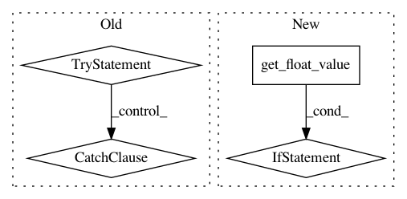

24ab1bff71d480227cb7a7de1d7ef34d0c0fcad2,mathics/builtin/arithmetic.py,_MPMathFunction,apply,#_MPMathFunction#Any#Any#,43
Before Change
mpmath_args = [sympy2mpmath(x, prec) for x in sympy_args]
if None in mpmath_args:
return
try:
result = self.get_mpmath_function(mpmath_args)(*mpmath_args)
result = from_sympy(mpmath2sympy(result, prec))
except ValueError as exc:
text = str(exc)
if text == "gamma function pole":
return Symbol("ComplexInfinity")
else:
raise
except ZeroDivisionError:
return
except SpecialValueError as exc:
return Symbol(exc.name)
return result
class _MPMathMultiFunction(_MPMathFunction):
After Change
if any(arg.is_machine_precision() for arg in args):
// if any argument has machine precision then the entire calculation
// is done with machine precision.
float_args = [arg.get_float_value(n_evaluation=evaluation, permit_complex=True) for arg in args]
if None in float_args:
return
result = self.call_mpmath(mpmath_function, float_args)
if isinstance(result, (mpmath.mpc, mpmath.mpf)):
result = Number.from_mp(result)
else:
prec = min_prec(*args)
with mpmath.workprec(prec):
sympy_args = [x.to_sympy() for x in args]
In pattern: SUPERPATTERN
Frequency: 3
Non-data size: 4
Instances
Project Name: mathics/Mathics
Commit Name: 24ab1bff71d480227cb7a7de1d7ef34d0c0fcad2
Time: 2016-08-05
Author: 16sn6uv@gmail.com
File Name: mathics/builtin/arithmetic.py
Class Name: _MPMathFunction
Method Name: apply
Project Name: mathics/Mathics
Commit Name: 8f89d43f1af922d2bd4c1f1e90ffba5aea7b2361
Time: 2016-08-05
Author: 16sn6uv@gmail.com
File Name: mathics/builtin/graphics.py
Class Name: Blend
Method Name: apply
Project Name: mathics/Mathics
Commit Name: 8f89d43f1af922d2bd4c1f1e90ffba5aea7b2361
Time: 2016-08-05
Author: 16sn6uv@gmail.com
File Name: mathics/builtin/graphics.py
Class Name: _Color
Method Name: init